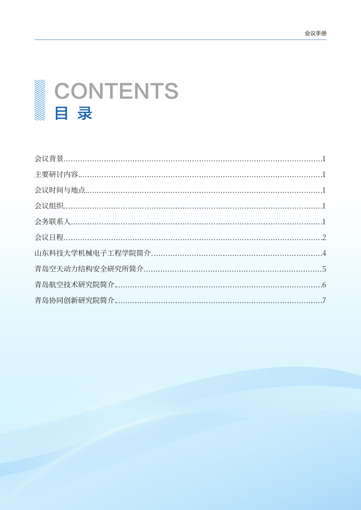
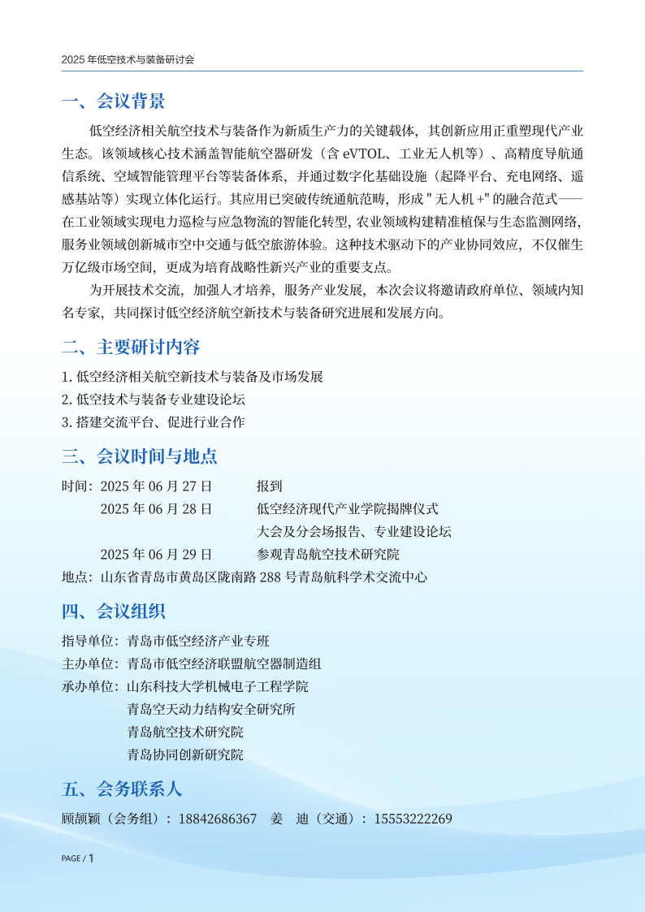
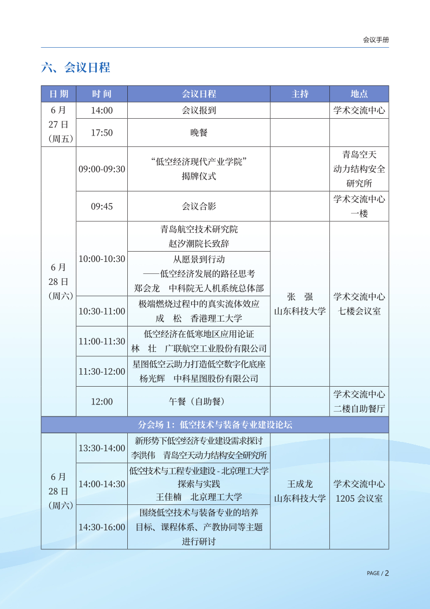
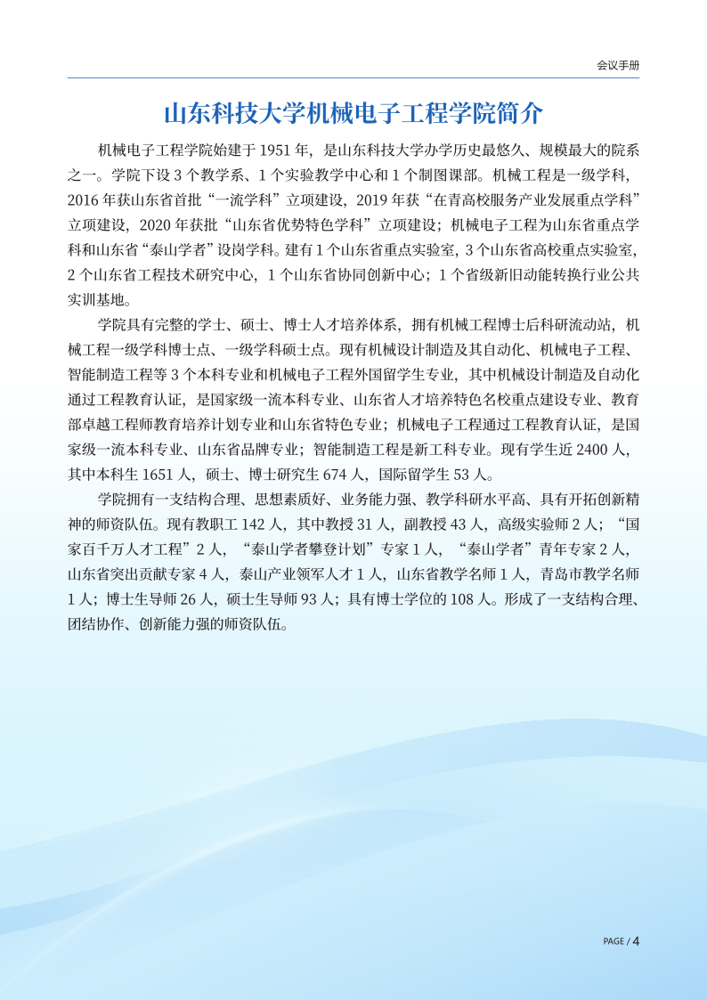
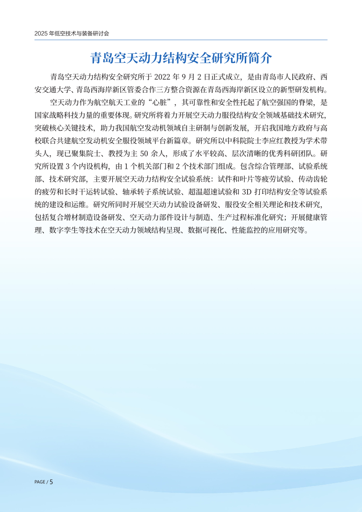
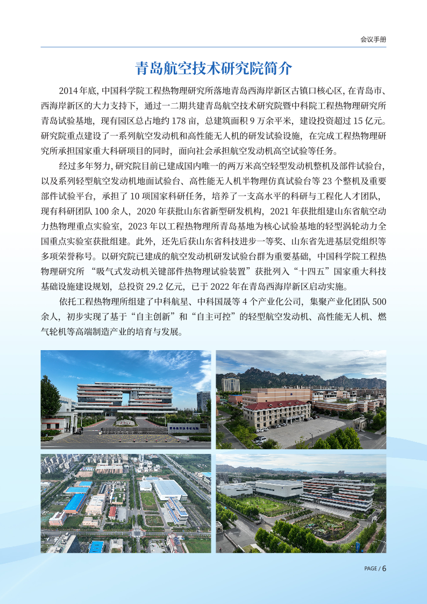
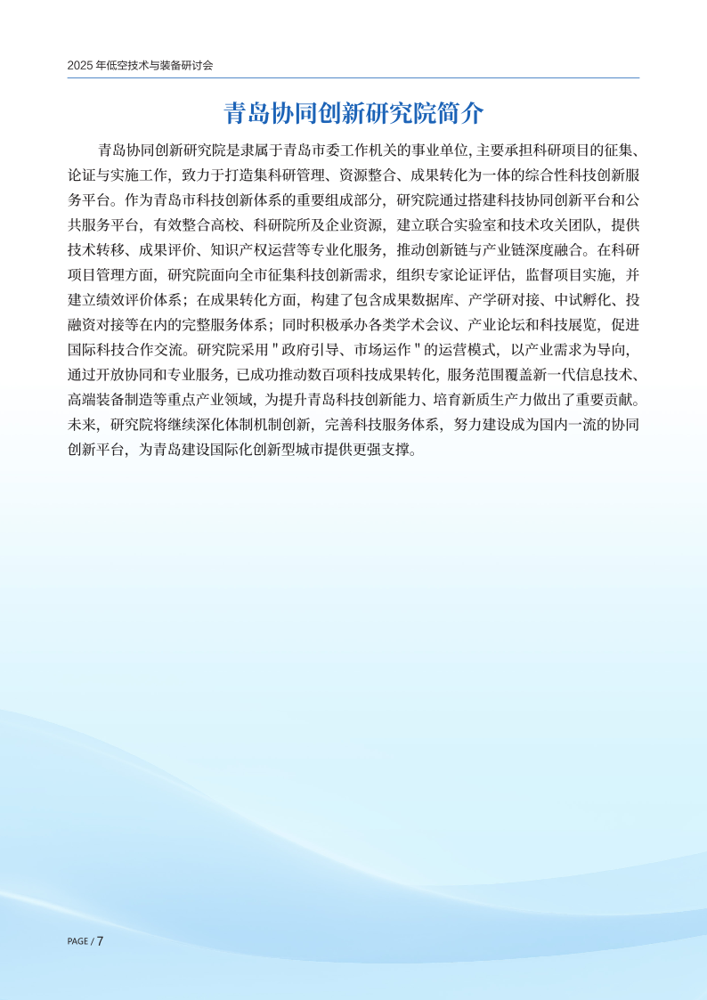

低空经济会议
刘训臣
2025年6月28日我们学院组织了一个低空经济为主题的会。并且有一个低空经济现代产业学院的揭牌仪式。欢迎大家来参会！感谢来做报告的专家！
      
未来我们也会做一些无人机方面的工作。最近要做的就是有一个风墙吹风的无人机飞行测试笼子。 侧面采用很多个风扇吹风产生风速和分布可变可控的强风环境，模拟无人机在强风环境下飞行控制实验。
初步可以通过少量几个相机进行初步粗略的轨迹追踪，后续可以增加风墙面积、无刷电机数量、相机数量，逐步提高实验能力和实验精度。
和图像有关的主要做两个事情：
-
无人机周围多个摄像头， 通过图像重构方法实现无人机空间定位和三维姿态动作捕捉。重构无人机轨迹姿态，在实验室可以作为复杂控制算法的测试平台，提供精确的位置和姿态信息。
-
无人机上一个或者两个摄像头，拍外部画面，计算自己的规矩姿态。这个和无人驾驶就很像了。现在无人驾驶用的很多的是端到端的算法，通过这个项目可以学学纯视觉的算法。有大规模应用的前景。当然无人机的话要有地图去匹配。